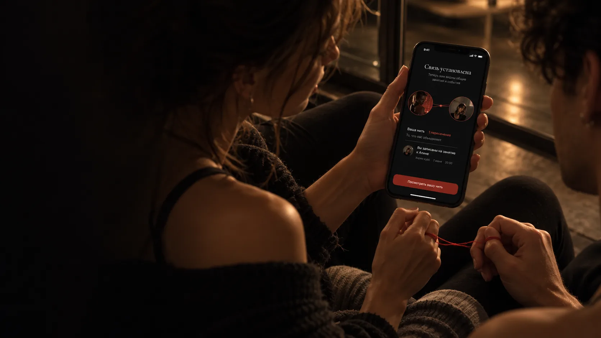
Занятия, события и люди — в одном месте
- Роль
- Продуктовый дизайнер, соло
- Срок
- 2 месяца
- Исследование
- 6 танцоров и 3 педагога
- Тест прототипа
- 5 педагогов, все справились сами
Одно приложение вместо чатов, афиш и соцсетей студий
Процесс работы
О проекте
Информация есть,
связей между ней — нет

Четыре точки одной нити
Занятия
мастер-классы,
тренировки
Люди
знакомства,
комьюнити
События
батлы, фестивали,
вечеринки
Связи
вдохновение,
развитие, карьера
Откуда проект
Концепт-проект · 2 месяца · солоПроект вырос из моего опыта в танцах: занятия ищешь в чатах, о событиях узнаёшь из соцсетей студий, а знакомства с мастер-классов теряются. Я много раз обсуждала это с танцорами в раздевалках и на занятиях — и раз за разом слышала одно и то же
Танцоры и педагоги
Танцоры
Хотят находить занятия и события под свой стиль и уровень, знакомиться и расти в сообществе
Информация разбросана, а о педагоге почти ничего не понятно до первого занятия
Педагоги
Хотят набирать учеников, публиковать занятия и рассказывать о себе
Расписание и анонсы приходится вести сразу в нескольких местах
Как танцоры находят занятия
Интервью с 6 знакомыми танцорами: как они находят занятия и где узнали о последних — набралось 10 случаев. Ещё поговорила с 3 педагогами
Это 10 случаев из моего окружения, а не доля каналов в целом. Выборка маленькая — это ограничение исследования
«Расписание у меня в трёх местах: чат группы, сторис и пост. Если что-то переношу — правлю везде и всё равно кто-то приходит не в то время»
— педагог, Frame Up«Про мастер-класс узнала из сторис подруги. Пока собралась записаться, сторис уже пропала»
— танцовщица, 2 года в High HeelsМои танцевальные группы
Девочки из моих танцевальных групп — среди них и участницы интервью


Две проблемы и решения
Информация разбросана
Расписание, стоимость и запись могут находиться в разных местах. Иногда приходится писать педагогу, чтобы уточнить детали
Карточка занятия: время, место, цена и запись на одном экране
Непонятно, актуальна ли информация
Анонсы в сторис исчезают, а изменения расписания не всегда дублируются во всех каналах
Педагог меняет занятие в одном месте — ученики видят актуальную версию и получают уведомление
Где ещё ищут занятия
Расписание и онлайн-запись уже есть, но только внутри одной студии. Ни один канал не связывает людей после занятия
Гипотезы и как их проверить
Одна выросла из исследования, две — мои предположения. Для каждой — простой способ проверки на 5 людях
Ценность до регистрации
Если сначала показать подборку, а регистрацию дать последней, больше новичков дойдут до первой записи
Предположение · не провереноСпрошу 5 танцоров, нашли ли они занятие в Looma быстрее, чем в чатах, и дошли ли до записи
Расписание в Looma
Если опубликовать занятие проще, чем вести чаты, педагоги начнут вести расписание в Looma
Из исследованияПопрошу 5 педагогов неделю вести расписание только в Looma и спрошу, вернулись бы они к чатам
Связь удерживает
Если после общей встречи предложить связь, люди будут возвращаться в приложение
Из моего опыта · не провереноПосле общего занятия спрошу 5 танцоров, отправили бы они запрос на связь и открыли бы приложение снова
Скоуп MVP
Главный путь: найти занятие, прийти и познакомиться. Остальное — в следующие версии
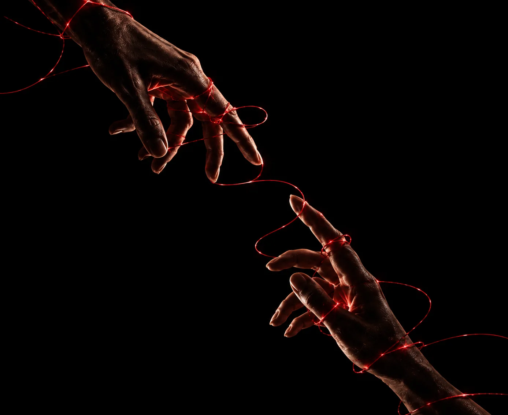
Метафора
и бренд
Красная нить — метафора связи между людьми
Пересечения
Вы встречаетесь в танцевальной среде: на занятиях, событиях или через общие интересы
Связь
Вы добавляете друг друга и устанавливаете связь
Ваша нить
История всех ваших пересечений собирается в одну нить — историю ваших общих точек
Логотип
Нить проходит сквозь буквы и связывает их в одно слово. Иконка собрана из той же нити
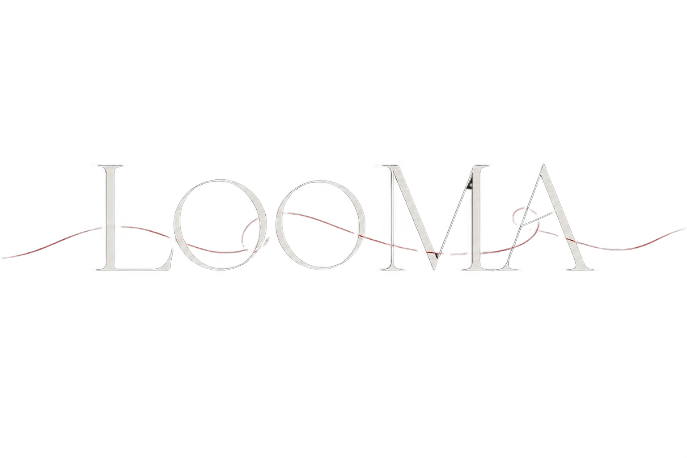
Wordmark App icon
App iconЦвет
Компоненты
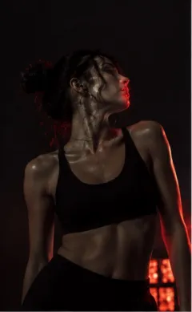
Типографика
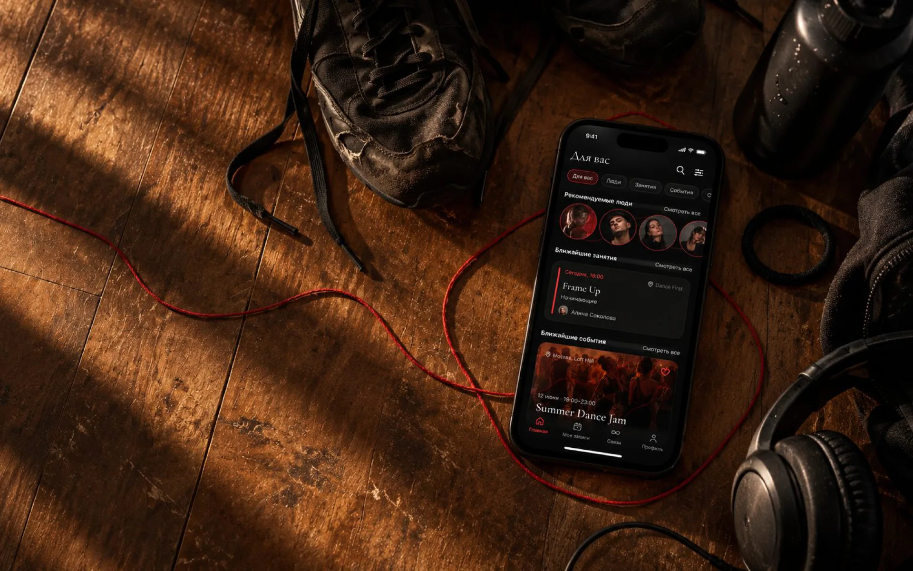
Проектирование
Онбординг
Показать ценность Looma до того, как человек начнёт искать занятия. Регистрация — последней
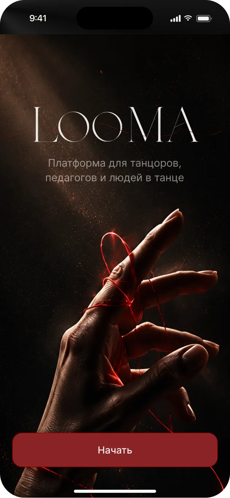
Старт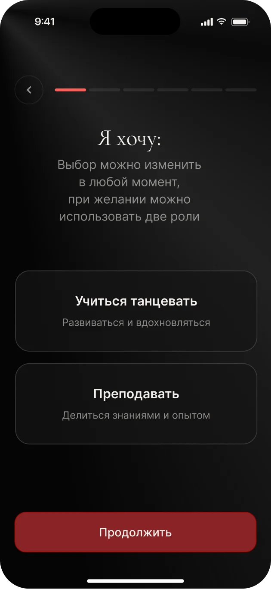
Роль Рекомендации
Рекомендации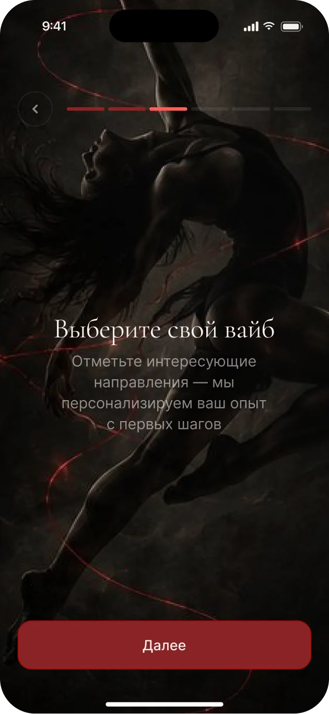
Вайб Направления
Направления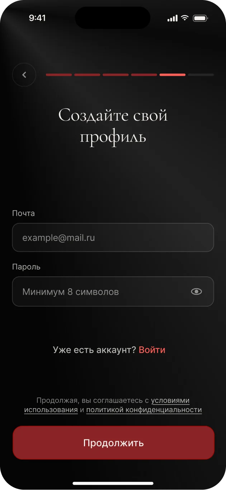
ПрофильПерсональные рекомендации
Занятия, люди и события подбираются под интересы пользователя
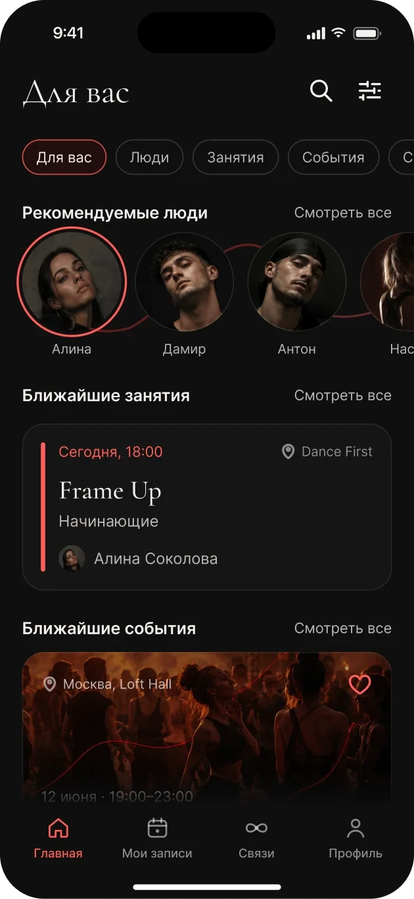
Истории
Педагог рассказывает о себе в формате историй: кто он, что ждёт на занятиях и кому они подойдут. Красное кольцо вокруг аватара в ленте значит, что у человека есть видео
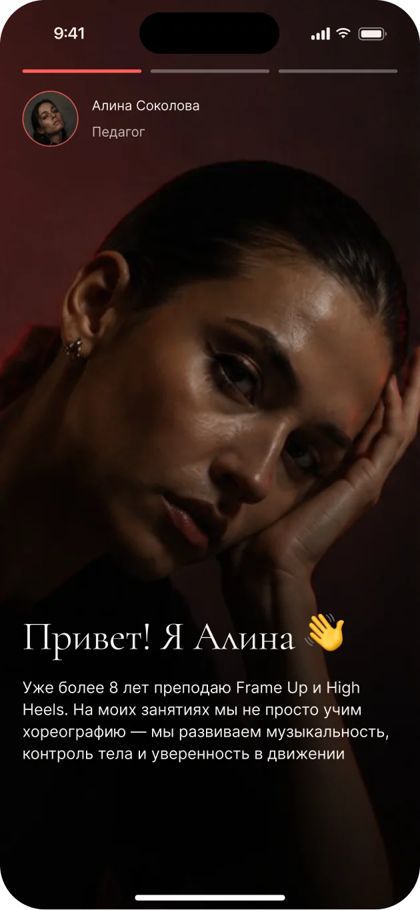
Знакомство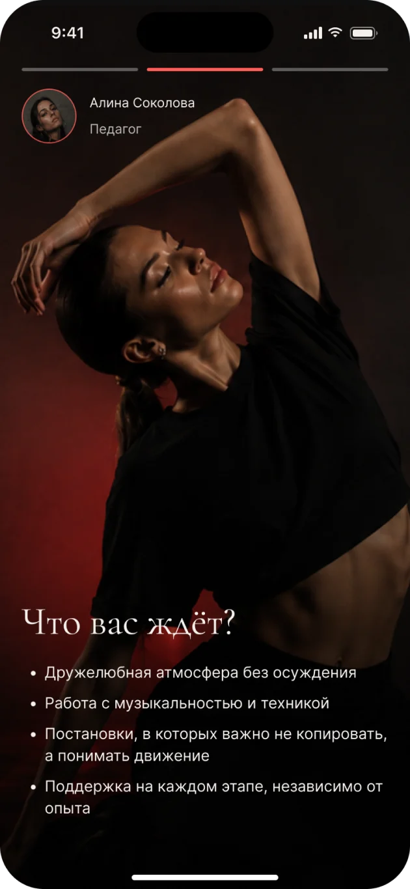
Что вас ждёт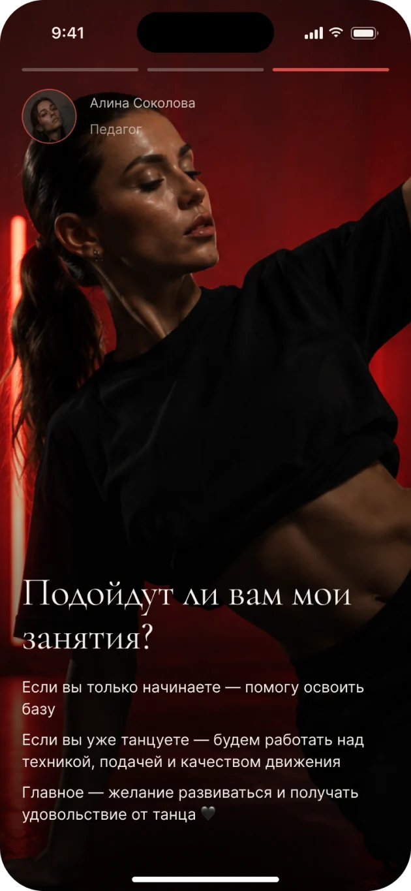
Кому подойдётСвязи
Найти человека, отправить запрос и получить общую нить — историю ваших пересечений. С кем были на одном занятии — предложить связь. Остальным — подписаться: это тоже запрос, а если его не примут, вы останетесь подписчиком
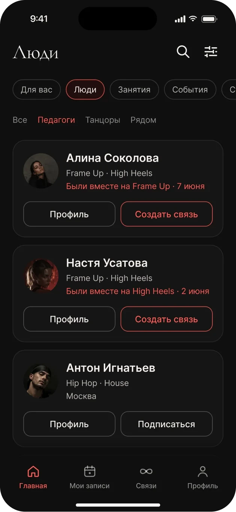
Люди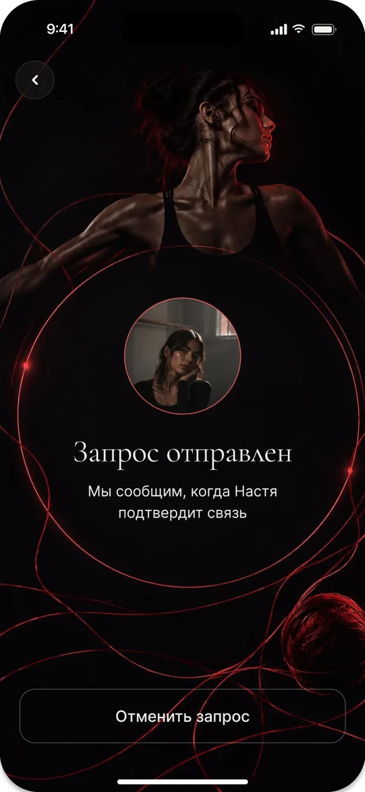
Запрос отправлен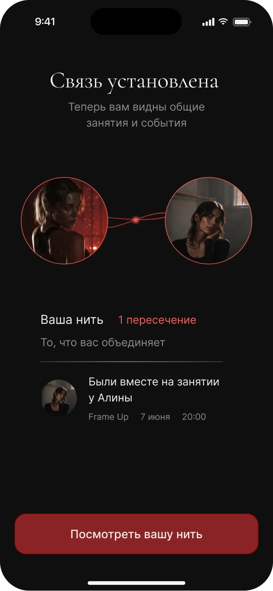
Связь установленаПопробуйте Looma
Ключевые решения
Четыре решения, на которых держится продукт, и цена каждого
Ценность до регистрации
Онбординг сначала показывает, что даёт Looma, и собирает направления и вайб. Регистрация — последней
Цена: контакт узнаём позже, часть людей уйдёт без регистрации
Две роли в одном аккаунте
Танцор и педагог — часто один человек. Роль выбирается на старте, её можно сменить
Цена: нужен переключатель ролей. Чтобы не путать, в меню меняется только один пункт
Истории вместо анкеты
Педагог рассказывает о себе в коротких видео — характер и энергию видно до первого занятия
Цена: педагогу нужно снять видео, порог входа выше
Связь — только по согласию
Связь появляется, когда её подтверждают оба. Затем открывается «Ваша нить»
Цена: сеть растёт медленнее, зато без спама и навязчивых контактов

Тестирование
и итоги
Публикация занятия
Начала с педагогов: без их занятий лента пустая и танцору нечего искать. 5 знакомых педагогов, среди них трое из интервью, показали, как обычно размещают анонсы, а затем выполнили ту же задачу в прототипе
опубликовали занятие сами
юзабилити‑тест с модератором
- Написать текст анонса
- Отправить его в чат группы
- Закрепить сообщение в чате
- Снять сторис в Instagram
- Добавить детали и опубликовать сторис
- Закрепить сторис в актуальном
- Ответить в директ тем, кто хочет записаться
- Внести учеников в свой список
- Пересчитать места и написать, когда их не осталось
- Открыть вкладку «Кабинет»
- Нажать «Новое занятие»
- Заполнить форму: стиль, уровень, дата, время, место, цена и число мест
- Нажать «Опубликовать» — места Looma считает сама
Итерация после теста
Один педагог не сразу нашёл, где указать количество мест, — поле с лимитом сделала заметнее
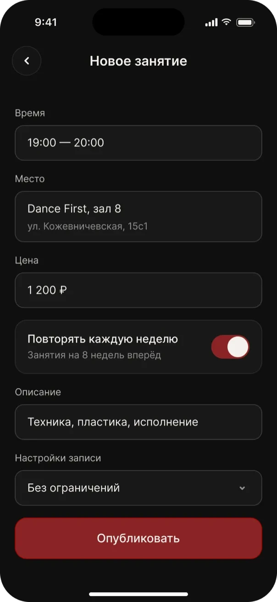
До: лимит в «Настройках записи» в конце формы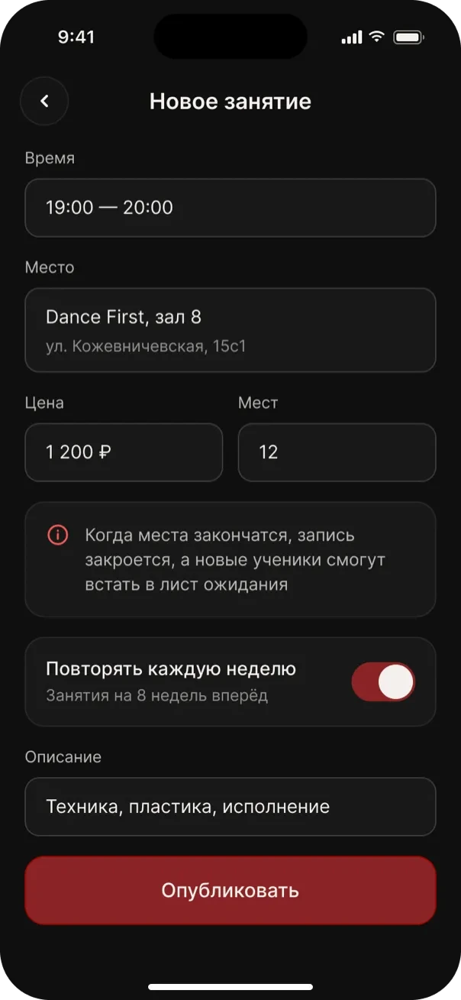
После: поле «Мест» рядом с ценойВыводы
Собрала бы компоненты до экранов
Первые экраны рисовала без библиотеки, и потом приводила их к одной системе
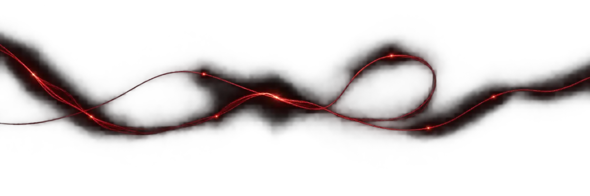
Спасибо за
внимание
удобнее открыть на компьютере
 Vidmer.danceСайт лаборатории танца на Tilda: расписание переехало из директа на сайт
Vidmer.danceСайт лаборатории танца на Tilda: расписание переехало из директа на сайт